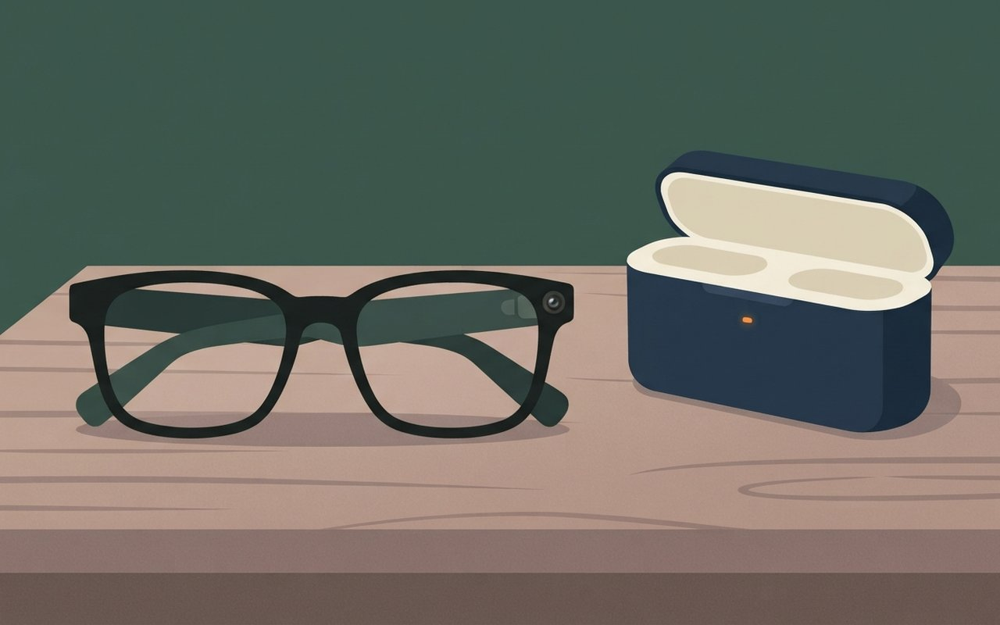

🎧 낭독 원고 보기
11월 13일 금요일, 데일리 브리프입니다. 오늘은 다섯 가지 소식을 전해 드립니다.
엔비디아를 33년 동안 이끈 젠슨 황이 물러났습니다. 엔비디아 이사회는 현지 시각 12일 아침 성명을 내고 젠슨 황이 최고경영자와 사장, 이사직에서 즉시 사임한다고 밝혔습니다. 이사회는 구체적인 이유를 밝히지 않았습니다. 황은 8일 불륜을 인정하고 사과했고, 나흘 만에 물러났습니다. 콜레트 크레스 최고재무책임자가 임시 최고경영자를 맡고, 창업 뒤 처음으로 이사회 의장직을 따로 만들었습니다. 미국 하원은 18일 비공개 브리핑 출석을 요청했고, 3분기 실적은 17일 예정대로 발표됩니다. 황은 26일 추수감사절 전에 의회에 출석하기로 했고, 이사회 독립조사와 투자자 집단소송도 이어지고 있습니다. 시가총액은 4조 달러 아래로 내려갔습니다.
코스피는 사흘 만에 내렸습니다. 12일 코스피는 0.61퍼센트 내린 5,342.73으로 마감했고, 10일과 11일 이틀 연속 오른 뒤의 하락입니다. 코스닥은 1.22퍼센트 내려 하루 만에 700선을 내줬습니다. 삼성전자는 1퍼센트 가까이 올랐고 SK하이닉스는 1.8퍼센트 내렸습니다. 장 마감 전 옵션 만기가 변동성을 키웠습니다. 뉴시스에 따르면 기관이 순매도했고 외국인은 순매수했습니다. 원달러 환율은 1,330원대입니다.
올해 한국을 찾은 외국인 관광객이 12일 처음으로 2천만 명을 넘었습니다. 천만 명을 넘긴 2012년 이후 14년 만입니다. 1월부터 9월까지 외국인의 관광 소비는 15조 9천억 원대로 1년 전보다 48퍼센트 가까이 늘었습니다. 지방 공항으로 들어온 관광객은 37퍼센트, 항만으로 들어온 관광객은 14.5퍼센트 늘었습니다. 문화체육관광부는 연말까지 나오는 수치가 모두 새 기록이 된다고 밝혔습니다.
공항철도 노사가 13일 새벽, 개통 뒤 첫 파업을 한 시간 반쯤 앞두고 잠정합의했다는 보도가 나왔습니다. 합의안에는 임금 4.9퍼센트 인상과 안전 인력 21명 확충 노력이 담겼고, 열차는 평소대로 운행합니다. 다만 철도노조는 12월 10일 무기한 총파업을, 서울교통공사 노조는 25일 파업을 예고해 연말 출퇴근길 불편이 우려됩니다. 인천공항 자회사 노조도 12월 추가 파업을 예고했습니다.
삼성전자의 첫 AI 안경이 예약판매에 들어갔습니다. 무게는 41그램이고 구글 제미나이가 들어갔습니다. 국내 출시는 12월 10일이고 국내 가격은 65만 원부터입니다. 카메라는 1,200만 화소이고 배터리는 최대 9시간 갑니다. 젠틀몬스터와 워비파커 홈페이지에서 예약을 받고, 만 18세 이상만 쓸 수 있습니다.
끝으로 오늘 서울 날씨입니다. 아침 최저 8도, 낮 최고 17도로 일교차가 큽니다. 비는 늦은 오후 전남 해안과 제주부터 시작해 밤에는 충청과 전라, 경남 서부로 넓어지겠습니다.
이상으로 오늘의 데일리 브리프를 마칩니다. 자세한 내용과 출처는 카드에서 확인하세요.
退
미국 · 반도체
젠슨 황, 엔비디아 CEO·이사직 즉시 사임 — 33년 만의 퇴진, 임시 CEO는 콜레트 크레스 CFO
엔비디아 이사회는 미 동부 시간 12일 오전 8시 50분쯤 홈페이지 성명에서 젠슨 황이 최고경영자와 사장, 이사회 이사직에서 즉각 사임한다고 밝혔다(YTN). 이사회는 구체적인 이유를 밝히지 않았다. YTN에 따르면 황은 8일 불륜을 인정하고 사과했고, 나흘 만에 물러났다.
콜레트 크레스 최고재무책임자(CFO)가 임시 CEO를 맡고, 회사 안팎에서 정식 후임을 찾는다. 창업 뒤 처음으로 이사회 의장직을 따로 만들어 1993년부터 이사인 하비 존스를 선임했다. 3분기 실적은 17일 발표하고, 크레스는 18일 전사 회의를 연다. 뉴시스에 따르면 미 하원 정보위·외교위·중국특위는 18일 비공개 합동브리핑 출석을 요청했고, 매스트 하원 외교위원장은 황이 26일 추수감사절 전에 의회에 나오기로 합의했다고 밝혔다. 시가총액은 4조 달러 아래로 내려갔다.
- 발표미 동부 12일 오전 8시 50분쯤 · 이사회 홈페이지 성명 · 사유 비공개
- 물러난 자리최고경영자(CEO) · 사장 · 이사회 이사
- 후임임시 CEO 콜레트 크레스(CFO) · 이사회 의장 신설, 하비 존스(1993년부터 이사) 선임
- 일정17일 3분기 실적 발표 · 18일 전사 회의 · 18일 하원 비공개 합동브리핑 요청 · 26일(추수감사절) 전 의회 출석 합의(매스트 위원장)
- 조사·소송이사회 독립조사(WLRK 법무법인) · 트럼프 "FBI가 다른 측면에서 들여다보고 있다" · 개인투자자 집단소송(뉴시스)
- 시장시가총액 4조 달러 아래로(뉴시스) · 개장 전 거래 10% 넘게 하락(경향)
- 확인 한계12일 종가·하락률은 마감 기사 미확인 · 장중 하락률은 매체 제목마다 달라 싣지 않음 ⚠ 변동 가능
Marketing View · 마케터의 시선
창업자 한 사람이 곧 회사의 얼굴이던 기업에서 그 얼굴이 하루아침에 빠졌다. 이사회가 의장직을 따로 만든 것은 '한 사람에게 쏠린 권한'을 나누겠다는 신호로 읽힌다. 17일 실적 발표가 새 체제의 첫 시험대다.
YTN — 젠슨 황 퇴진 뉴시스 — 사임 이후 조사 경향신문 — 젠슨 황 사임
YTN(11/13 03:56)·뉴시스(11/13 05:02)·경향(11/12 22:59) · 성명 시각·직위·의장·실적·전사 회의는 YTN, 임시 CEO는 YTN·경향 일치, 하원·FBI·소송·시총은 뉴시스, 개장 전 하락은 경향 (확인 2026-11-13)
젠슨 황 사임,
엔비디아 33년 만
엔비디아 이사회가 젠슨 황이 CEO·사장·이사직에서 즉시 물러난다고 밝혔어요. 임시 CEO는 콜레트 크레스 CFO이고, 3분기 실적은 17일 그대로 발표해요.
12일 사임|17일 실적|18일 전사 회의|26일 출석 시한
4조 달러|시가총액 · 이 선 아래로 내려감
사유 비공개 / 이사회 의장직 처음 신설
落
증시 · 12일 마감
코스피 12일 5,342.73(-0.61%) 사흘 만에 하락 — 코스닥 696.53, 하루 만에 700선 아래로
12일 코스피는 전 거래일보다 32.63p(0.61%) 내린 5,342.73으로 마감했다(뉴시스). 10일 5,239.13, 11일 5,375.36으로 이틀 오른 뒤 사흘 만의 하락이다. 코스닥은 8.57p(1.22%) 내린 696.53으로 하루 만에 700선을 내줬다. 원/달러 환율은 2.9원 내린 1,330.7원이다.
뉴시스에 따르면 코스피에서 기관은 6,800억 원대, 개인은 2,000억 원대를 순매도했고 외국인은 3,700억 원대를 순매수했다. 삼성전자는 0.97% 올랐고 SK하이닉스는 1.80%, 삼성전기는 4.01% 내렸다. 장 마감 전 옵션 만기가 변동성을 키웠다.
- 코스피(12일)5,342.73 · -32.63p(-0.61%) · 사흘 만의 하락
- 최근 종가10일 5,239.13(+4.39%) → 11일 5,375.36(+2.60%) → 12일 5,342.73(-0.61%)
- 코스닥(12일)696.53 · -8.57p(-1.22%) · 700선 아래로
- 환율1,330.7원 · -2.9원
- 종목삼성전자 +0.97% · SK하이닉스 -1.80% · 삼성전기 -4.01%
- 수급(뉴시스)기관 6,800억 원대·개인 2,000억 원대 순매도 · 외국인 3,700억 원대 순매수
- 확인 한계13일 새벽 뉴욕증시 마감은 반영하지 않음 · 수급은 뉴시스 단일 ⚠ 변동 가능
Marketing View · 마케터의 시선
이틀 동안 4%와 2.6%씩 오른 뒤의 하락폭은 0.61%로 작았다. 다만 엔비디아 경영 공백 소식은 한국 장이 끝난 뒤에 나왔다. 반도체 종목이 이 소식을 어떻게 받는지는 오늘 장에서 봐야 한다. 이 카드는 투자 권유가 아니다.
뉴시스 — 코스피 사흘 만에 하락 뉴스핌 — 11일 마감시황 뉴스핌 — 10일 마감시황
12일 지수·수급·종목은 뉴시스(11/12 16:14) 기준, 파이낸셜뉴스는 같은 기사 전재라 교차 출처로 쓰지 않음 · 10일·11일 종가는 뉴스핌(11/10·11/11) (확인 2026-11-13)
코스피 사흘 만에 하락,
5,342.73으로 마감
12일 코스피가 0.61% 내렸어요. 이틀 연속 오른 뒤의 하락이에요. 코스닥은 1.22% 내린 696.53으로 하루 만에 700선을 내줬어요.
696.53|코스닥 · 하루 만에 700선 아래로
코스피 11일 5,375.36 → 12일 5,342.73 / 원·달러 1,330.7원
客
관광 · 방한객
외국인 관광객 올해 처음 2,000만 명 넘어 — 14년 만에 두 배, 1~9월 관광 소비 15조 9,416억 원(+47.7%)
올해 한국을 찾은 외국인 관광객이 12일 사상 처음 2,000만 명을 넘었다(경향·YTN·뉴스1). 1,000만 명을 처음 넘은 2012년 이후 14년 만이다. 문화체육관광부는 연말까지 갱신되는 수치가 모두 새 기록이 된다고 밝혔다.
1~9월 외국인의 관광 분야 소비액은 15조 9,416억 원으로 지난해 같은 기간 10조 7,940억 원보다 47.7% 늘었다(경향). 비수도권 공항 입국자는 324만 명(전체의 19.0%)으로 37.4%, 항만 입국자는 158만 명(9.2%)으로 14.5% 늘었다. 최휘영 문체부 장관은 3,000만·4,000만 명 시대를 준비하겠다고 했다.
- 방한객12일 2,000만 명 돌파 · 사상 처음 · 2012년 1,000만 명 이후 14년 만
- 관광 소비(1~9월)15조 9,416억 원(약 15.9조) · 지난해 10조 7,940억 원(약 10.8조) · +47.7%
- 지방 입국(1~9월)비수도권 공항 324만 명(19.0%, +37.4%) · 항만 158만 명(9.2%, +14.5%)
- 정부문체부 "연말까지 수치 모두 새 기록" · 3,000만·4,000만 명 시대 준비(최휘영 장관)
- 확인 한계2,000만 명 돌파 시점의 집계 방식은 기사 본문으로 확인 못 함 · 소비액은 문체부 추산 ⚠ 변동 가능
Marketing View · 마케터의 시선
사람 수보다 소비가 더 빨리 늘었다. 지방 공항 입국이 37% 늘어난 것도 눈여겨볼 대목이다. 서울 밖 상권과 숙박 업계가 외국어 안내·결제 수단을 갖추는지가 다음 성장의 크기를 정한다.
경향신문 — 방한객 2,000만 명 YTN — 사상 첫 2천만 명 뉴스1 — 관광 소비 15조
경향(11/12 16:23)·YTN(11/12 20:23)·뉴스1(11/12 14:06) · 2,000만 명·소비액 47.7%는 세 매체 일치, 지난해 소비액·지방 입국 비중은 경향 기준 (확인 2026-11-13)
외국인 관광객,
처음으로 2,000만 명
올해 한국을 찾은 외국인 관광객이 12일 2,000만 명을 넘었어요. 2012년 1,000만 명 이후 14년 만이고, 1~9월 관광 소비는 47.7% 늘었어요.
지난해(조 원):10.8|올해(조 원):15.9
Foreign tourists with rolling suitcases and shopping bags walking along a lively Seoul shopping street with storefronts with blank signs in autumn, flat illustration, no text, no logos
1~9월 관광 소비 · +47.7%
鐵
교통 · 연말 파업
공항철도, 첫 파업 1시간 반 앞두고 잠정합의 보도 — 철도노조 12월 10일·서울지하철 25일 파업 예고는 그대로
재경일보에 따르면 공항철도 노사는 13일 오전 3시 30분쯤 임금협약에 잠정합의했다. 2007년 개통 뒤 첫 파업이 될 13일 하루 경고파업을 1시간 30분가량 앞둔 시점이다. 전년도 총인건비 대비 4.9% 인상, 안전 인력 21명 확충 공동 노력, 하위직급 근속승진제도 개선이 담겼고, 열차는 평소대로 운행한다고 전했다.
다른 노조의 파업 예고는 남아 있다. 뉴시스에 따르면 전국철도노조는 찬성 77.6%로 쟁의를 가결해 12월 10일 오전 9시부터 무기한 총파업을 예고했다. 서울교통공사 제1노조는 수능 다음 날인 20일부터 준법투쟁, 25일 파업에 들어간다. 인천공항 자회사 노조도 12월 추가 파업을 예고했다. 국토교통부 관계자는 "이동 수요가 많은 연말 파업으로 국민 불편이 특히 우려되는 상황"이라고 말했다.
- 공항철도13일 오전 3시 30분쯤 잠정합의(재경일보 단일) · 임금 4.9% · 안전 인력 21명 확충 노력 · 근속승진 개선 · 정상 운행
- 철도노조12월 10일 오전 9시 무기한 총파업 예고 · 찬성 77.6%
- 서울교통공사제1노조 20일 준법투쟁 → 25일 파업
- 인천공항 자회사12월 추가 파업 예고
- 확인 한계공항철도 잠정합의는 재경일보 단일 보도 · 조합원 찬반 등 이후 절차 미확인 ⚠ 변동 가능
Marketing View · 마케터의 시선
연말은 출장·여행·모임으로 이동이 가장 많은 때다. 12월 10일 전후 KTX·수도권 전철 일정을 잡는 사람이라면 파업 예고일을 달력에 적어 두고, 코레일·서울교통공사 공지를 확인하는 편이 안전하다.
재경일보 — 공항철도 잠정합의 뉴시스 — 공공부문 줄줄이 파업 예고
재경일보(11/13 04:34) 단일 매체(잠정합의) · 파업 예고 일정은 뉴시스(11/12 15:32) (확인 2026-11-13)
공항철도는 잠정합의,
12월 철도 파업 예고
공항철도 노사가 첫 파업 직전 잠정합의했다는 보도가 나왔어요. 다만 철도노조는 12월 10일, 서울교통공사 노조는 25일 파업을 예고했어요.
13일 합의|20일 준법|25일 파업|12/10 철도
77.6%|철도노조 쟁의 찬반투표 찬성률
공항철도 합의는 재경일보 단일 보도 / 예고 일정은 뉴시스
鏡
IT · 삼성전자
삼성 첫 AI 안경 예약판매 — 41g·제미나이 탑재, 12월 10일 한·미 출시, 국내 65만 원부터
삼성전자가 첫 AI 안경 '인텔리전트 아이웨어'를 12일부터 젠틀몬스터·워비파커 공식 홈페이지에서 예약판매한다(경향·지디넷코리아). 출시는 12월 10일 한국·미국 동시이고, 국내에서는 젠틀몬스터 전국 매장에서도 산다. 9개 디자인·30개 제품(젠틀몬스터 16·워비파커 14)이다.
무게는 41g이고 구글 제미나이가 들어갔다. 1,200만 화소 HDR 카메라, 배터리 최대 9시간(케이스 포함 72시간), 스피커 2개·마이크 4개를 갖췄다. 경향에 따르면 만 18세 이상만 쓸 수 있다. 국내 가격은 경향이 65만~75만 원, 지디넷코리아가 젠틀몬스터 모델 기준 65만~70만 원으로 적어 매체별로 다르다.
- 판매12일 예약판매(젠틀몬스터·워비파커 공식 홈페이지) · 12월 10일 한·미 동시 출시
- 제품9개 디자인 · 30개 제품(젠틀몬스터 16 · 워비파커 14)
- 사양41g · 제미나이 · 1,200만 화소 HDR 카메라 · 배터리 최대 9시간(케이스 포함 72시간) · 스피커 2·마이크 4
- 국내 가격65만 원부터 — 경향 65만~75만 원 / 지디넷코리아 65만~70만 원(젠틀몬스터 기준), 매체별 표기 불일치
- 이용 조건만 18세 이상(경향)
- 확인 한계가격·출시 일정은 매체 보도 기준 ⚠ 변동 가능
Marketing View · 마케터의 시선
전자회사가 아니라 안경 브랜드 홈페이지와 매장에서 판다. 30개 제품으로 '기기'보다 '패션 소품'으로 고르게 한 셈이다. 카메라 달린 안경이 일상 공간에서 받아들여질지가 판매의 관건이다.
경향신문 — 삼성 AI 안경 지디넷코리아 — 12월 10일 출시
경향(11/12 23:00)·지디넷코리아(11/12 23:00) · 무게·출시일·배터리는 일치, 국내 가격은 불일치 · 18세 이상은 경향 기준 (확인 2026-11-13)
삼성 첫 AI 안경,
12월 10일 출시
12일부터 젠틀몬스터·워비파커 홈페이지에서 예약판매해요. 무게는 41g이고 제미나이가 들어갔어요. 국내 가격은 65만 원부터예요.
41g|무게 · 배터리 최대 9시간
A pair of stylish black-framed smart glasses with a tiny camera lens on the hinge resting on a wooden table next to a charging case, flat illustration, no text, no logos

9개 디자인 · 30개 제품 / 만 18세 이상